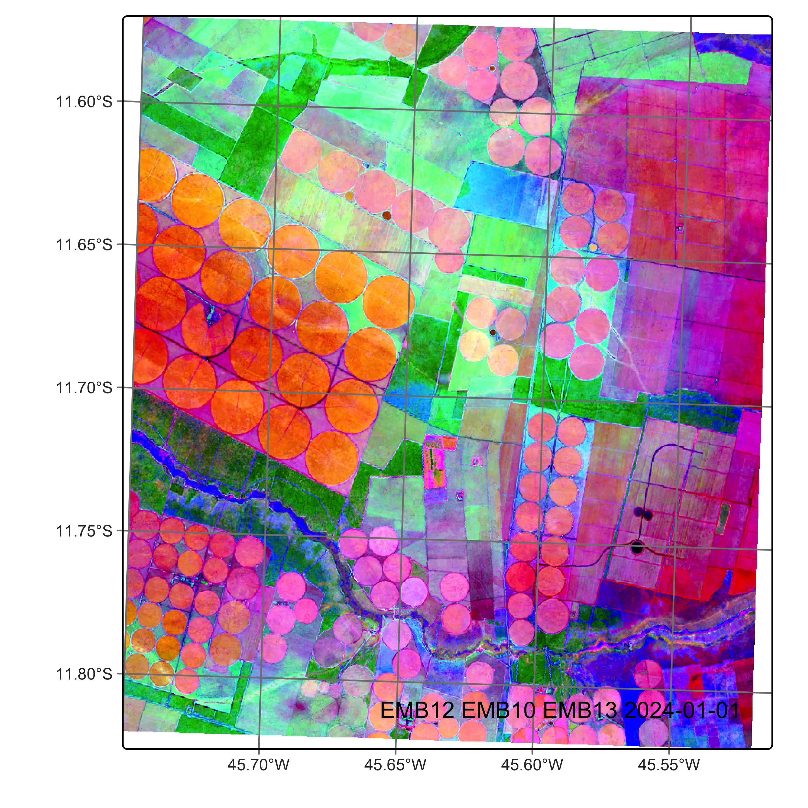
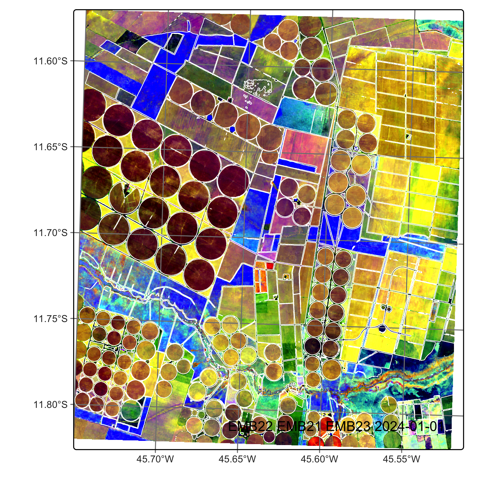
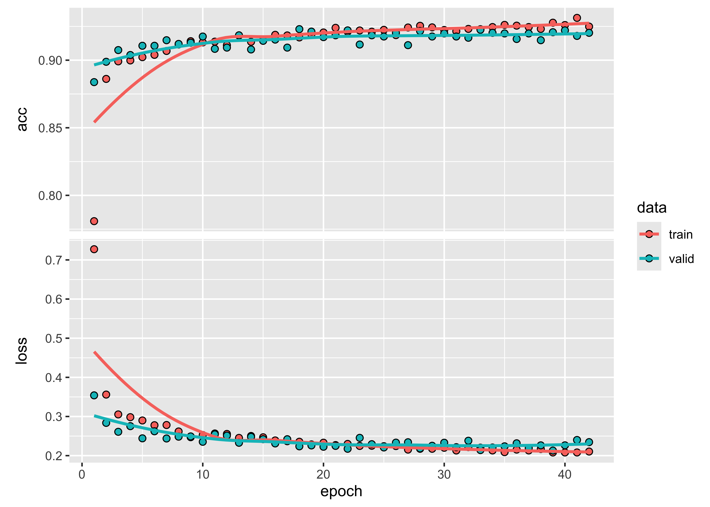
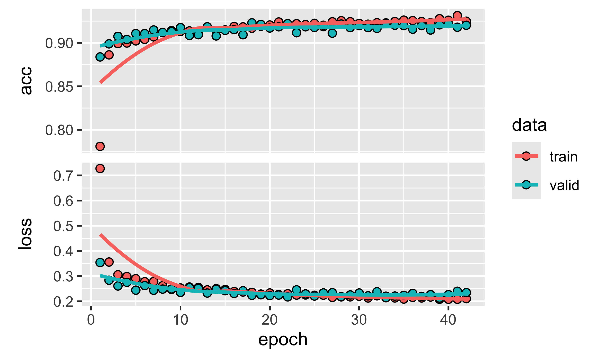
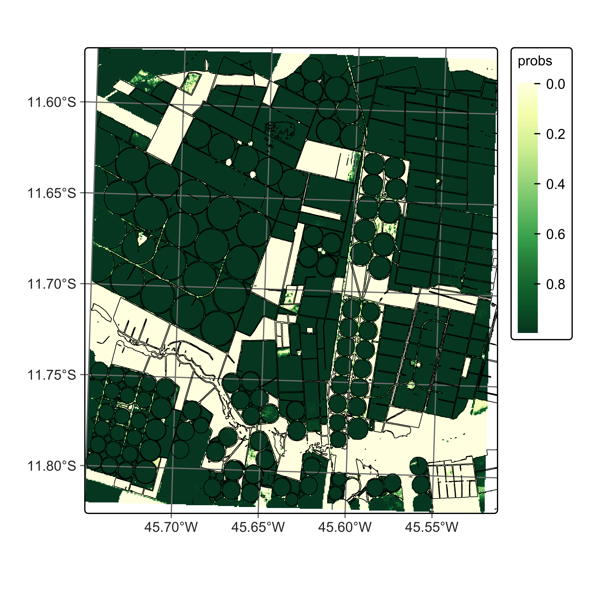
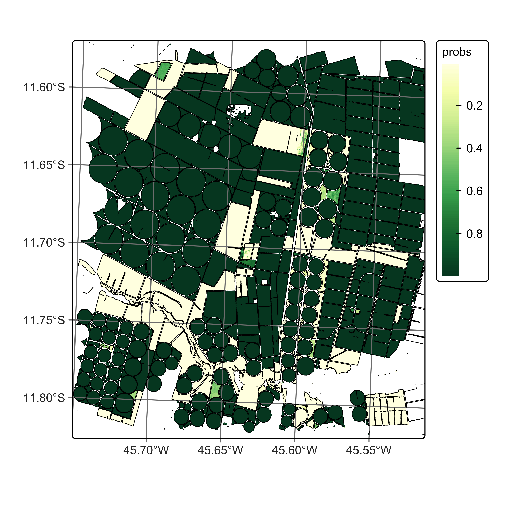
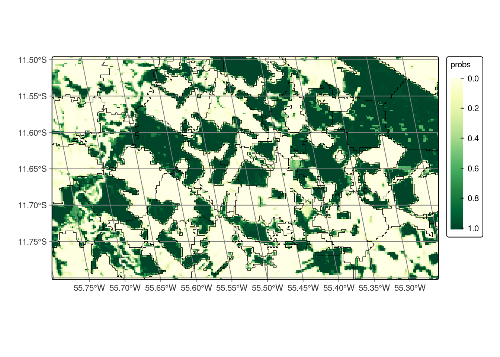
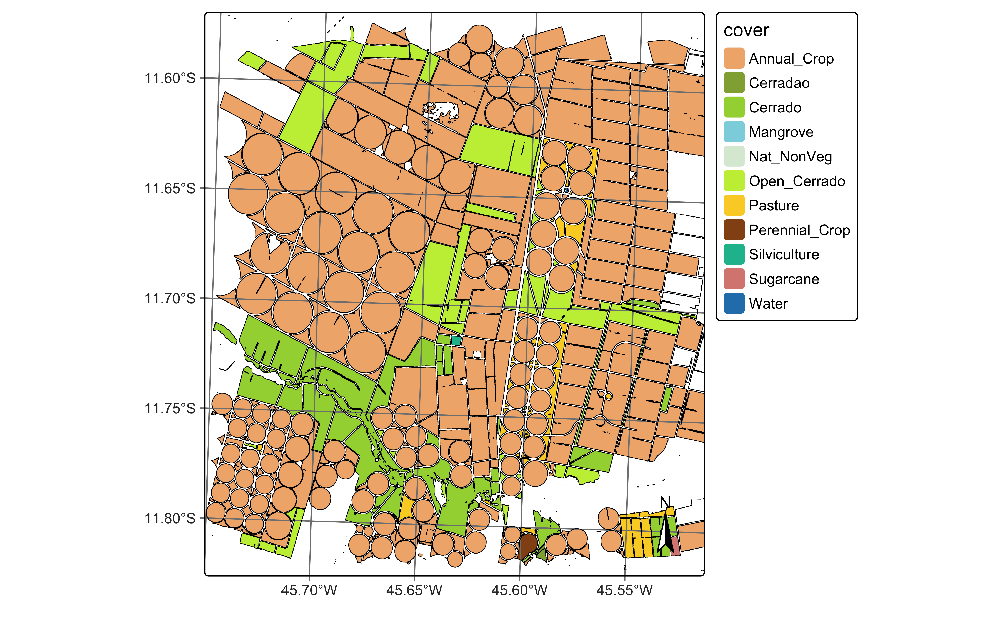

29 Creating vector data cube from local files

Configurations to run this chapter
# load "pysits" library
from pysits import *
from pathlib import Path
# set tempdir if it does not exist
tempdir_py = Path.home() / "sitsbook/tempdir/Python/vec_create"
tempdir_py.mkdir(parents=True, exist_ok=True)29.1 Introduction
In many situations, users may want to create vector data cubes from local files. The most common case is when the want to recover a vector file has been previously created. An alternative is when users want to join a vector data file to a raster data cube. Recall that sits uses a specific notion of vector data cubes, which are polygons that cover an entire period of time. One example are farm boundaries for agricultural statistics.
To be used for classification, vector cubes are associated to a raster cube. In this way, classification is done on a polygon-by-polygon basis. Given a polygon which matches part of a raster cube, sits uses pixels inside the polygon to obtain a set of time series that are used for classification, as shown in the example below.
In what follows, we illustrate the procedure of linking vector and raster file.
29.2 Retrieving an external vector file
In this example, we will use a vector file developed by the “Fields of the World” (FTW) project [1]. FTW is a community-driven, global initiative that uses artificial intelligence and satellite imagery to map every agricultural field on Earth. Its aims are to detect and outline agricultural field boundaries at scale using machine learning and deep learning. It provide high-resolution boundary data spanning hundreds of countries and territories, mapping billions of individual field polygons. For more details in the project, please visit the Fields of the World website.
The selected FTW subset covers an agricultural area in the State of Bahia in Brazil and corresponds to an area inside the S13W46 grid provide by FTW in their website, defined by the bounding box with limits (lat_min = -11.82, lat_max = -11.57, lon_min = -45.75, lon_max = -45.52). The FTW file contains closed polygons which are geometrically consistent. The data is available in the sitsdata package, as show below.
# directory where FTW file is located
fow_dir <- system.file("/extdata/fields_of_the_world", package = "sitsdata")
list.files(fow_dir)[1] "SENTINEL-2_FOW_015009_2024-01-01_2024-12-31_segments_v1.gpkg"# FTW file is available in a local directory
fow_dir = r_package_dir("extdata/Rondonia-20LMR/", package = "sitsdata")
# List FTW file
files = [p.name for p in Path(fow_dir).iterdir() if p.is_file()]
print(files)[1] "SENTINEL-2_FOW_015009_2024-01-01_2024-12-31_segments_v1.gpkg"The FTW file has been converted from the original format geoparquet to a geopackage format, which is used by sits. Its name has also been changed to conform to the expected sits file format for raster and vector processed files, namely c("X1", "X2", "tile", "start_date", "end_date", "band", "version"). In this case, the components of the file name are split using _, and the first two elements are ignored (although we have included SENTINEL and FOW for clarity). The band type is segments. Any geopackage polygon file that contains these required items can be imported and linked to a corresponding raster file, as shown below.
For further information, please see the section “Reading classified images as a local data cube in this book.
29.3 Retrieving a local data cube
In this example, we will use an embedding cube covering the same region as the FTW segments. This cube has been produced using the scripts described in the “Building regional embeddings”. The original data consists of a two-year LANDSAT-8 cube for the period 2023-01-01 to 2024-12-31 covering the Brazilian Cerrado biome in monnthly intervals. To build the embedding, we used the JeLEPA algorithm [Balestriero2025] which is implemented by the sits_ssl_lejepa() function.
# Retrieve a local embedding cube built with LeJEPA encoder
# data directory
images_dir <- system.file("extdata/Bahia-LeJEPA", package = "sitsdata")
# local cube
lejepa_cube <- sits_cube(
source = "BDC",
collection = "LANDSAT-OLI-16D",
data_dir = images_dir,
parse_info = c("satellite", "sensor", "tile", "band", "date")
)
# plot an RGB combination of three dimensions of the embedding cube
plot(lejepa_cube, green = "EMB10", red = "EMB12", blue = "EMB13")
# Retrieve a local cube based with MODIS data
# data directory
images_dir = r_package_dir("extdata/Bahia-LeJEPA", package = "sitsdata")
# local cube
lejepa_cube = sits_cube(
source = "BDC",
collection = "LANDSAT-OLI-16D",
data_dir = images_dir,
parse_info = c("satellite", "sensor", "tile", "band", "date")
)
# plot an RGB combination of three dimensions of the embedding cube
plot(lejepa_cube, green = "EMB10", red = "EMB12", blue = "EMB13")
29.4 Building a vector data cube for raster and vector files
We now produce a vector data cube by associating the FTW vector file with the raster data cube produced above. To do this, we use the sits_cube() function, with the following parameters:
| Parameter | Meaning |
|---|---|
source |
original source from which the data has been downloaded. |
collection |
image collection in data source. |
raster_cube |
raster cube to be merged with vector data. |
vector_dir |
local directory where vector files are stored. |
parse_info |
parsing information for metadata retrieval on local file. |
delim |
delimiter for parsing local files (default = “_“). |
multicores |
number of workers for parallel processing (default = 2). |
version |
version of the vector file (default = “v1”). |
progress |
show a progress bar? |
# create a vector cube by merging a raster cube with a vector file with segments
vec_lejepa_cube <- sits_cube(
source = "BDC",
collection = "LANDSAT-OLI-16D",
raster_cube = lejepa_cube,
vector_dir = fow_dir,
parse_info = c("X1", "X2", "tile", "start_date", "end_date", "band", "version")
)
# plot the segmented cube
plot(vec_lejepa_cube,
green = "EMB21", red = "EMB22", blue = "EMB23",
seg_color = "white", line_width = 0.6)
# create a vector cube by merging a raster cube with a vector file with segments
vec_lejepa_cube = sits_cube(
source = "BDC",
collection = "LANDSAT-OLI-16D",
raster_cube = lejepa_cube,
vector_dir = fow_dir,
parse_info = c("X1", "X2", "tile", "start_date", "end_date", "band", "version")
)
# plot the segmented cube
plot(vec_lejepa_cube,
green = "EMB21", red = "EMB22", blue = "EMB23",
seg_color = "white", line_width = 0.6)
29.5 Training a classification model
After building a vector data cube, we can now classify it, following the guidelines of the previous chapter “Object-based time series image analysis. We start by building a machine learning model using the MLP (multi-layer perceptron) algorithm. To do so, we use a samples of a labelled training set developed by the sits team for LUCC classification in the Cerrado biome in Brazil. The data set is available in Hugging Face.
# Download the labelled data set from Hugging Face
samples_cerrado <- sits_from_hf(
repo = "e-sensing/samples_cerrado",
file = "labelled_samples_cerrado.parquet",
type = "dataset"
)
# Use 10% of samples
samples_cerrado_frac <- sits_sample(samples_cerrado, frac = 0.1)
# plot cube
summary(samples_cerrado_frac)# A tibble: 11 × 3
label count prop
<chr> <int> <dbl>
1 Annual_Crop 1768 0.161
2 Cerradao 492 0.0447
3 Cerrado 3923 0.357
4 Mangrove 69 0.00627
5 Nat_NonVeg 12 0.00109
6 Open_Cerrado 1174 0.107
7 Pasture 2450 0.223
8 Perennial_Crop 163 0.0148
9 Silviculture 543 0.0494
10 Sugarcane 334 0.0304
11 Water 72 0.00655# Download the labelled data set from Hugging Face
samples_cerrado = sits_from_hf(
repo = "e-sensing/samples_cerrado",
file = "labelled_samples_cerrado.parquet",
type = "dataset"
)
# Use 10% of samples
samples_cerrado_frac = sits_sample(samples_cerrado, frac = 0.1)
# plot cube
summary(samples_cerrado_frac)# A tibble: 11 × 3
label count prop
<chr> <int> <dbl>
1 Annual_Crop 1768 0.161
2 Cerradao 492 0.0447
3 Cerrado 3923 0.357
4 Mangrove 69 0.00627
5 Nat_NonVeg 12 0.00109
6 Open_Cerrado 1174 0.107
7 Pasture 2450 0.223
8 Perennial_Crop 163 0.0148
9 Silviculture 543 0.0494
10 Sugarcane 334 0.0304
11 Water 72 0.00655These samples were obtained by extracting time series for Landsat data cube. As such their data contains values for the original Landsat bands. To be used to train embeddings, they have to be converted to the same dimensions as those of embeddings cube. To do so, we follow the procedure used in the “Building regional embeddings” chapter, which is to transform the samples using the same LeJEPA encoder that produced the embeddings cube. For details on how to generate such encoder, please refer to the above-mentioned chapter. For brevity’s sake, we will use a version of the encoder which is archived in the Hugging Face repository.
To transform the samples to the embedding space, we retrieve the LeJEPA encoder from Hugging Face and use it to encode the samples.
# Download the encoder from Hugging Face
lejepa_encoder <- sits_from_hf(
repo = "e-sensing/encoders_cerrado",
file = "ssl_lejepa_tcnn_model_2017_2024.rds",
type = "model"
)
# Encode the samples to transform them into the embedding space
samples_cerrado_enc <- sits_encode(
data = samples_cerrado_frac,
encoder = lejepa_encoder)# Download the encoder from Hugging Face
lejepa_encoder = sits_from_hf(
repo = "e-sensing/encoders_cerrado",
file = "ssl_lejepa_tcnn_model_2017_2024.rds",
type = "model"
)
# Encode the samples to transform them into the embedding space
samples_cerrado_enc = sits_encode(
data = samples_cerrado_frac,
encoder = lejepa_encoder)After converting the samples to the embedding space, we build a classification model using the multi-layer perceptron algorithm (sits_mlp()).
# train mlp model
mlp_model <- sits_train(
samples = samples_cerrado_enc,
ml_method = sits_mlp(
layers = c(256, 256, 256)
)
)
# plot the evolution
plot(mlp_model)
# train mlp model
mlp_model = sits_train(
samples = samples_cerrado_enc,
ml_method = sits_mlp(
layers = c(256, 256, 256)
)
)
# plot the evolution
plot(mlp_model)
29.6 Obtaining a classified map using a vector data cube
To classify the cube vector_lejepa_cube, we follow the procedure described in Chapter “Object-based time series image analysis”. The first step is a pixel-based classification using the trained model to the probabilities associated to each pixel for each class. The memsize, multicores and gpu_memory parameters should be set by users according to the capabilities of their machines.
# classify the embeddings cube to obtain class probabilities
vec_lejepa_cube_probs <- sits_classify(
data = vec_lejepa_cube,
ml_model = mlp_model,
multicores = 4,
memsize = 8,
gpu_memory = 8,
output_dir = tempdir_r
)
# plot the probabilities of label "Annual_Crop"
plot(vec_lejepa_cube_probs, labels = "Annual_Crop")
# classify the embeddings cube to obtain class probabilities
vec_lejepa_cube_probs = sits_classify(
data = vector_lejepa_cube,
ml_model = mlp_model,
roi = segments,
multicores = 4,
memsize = 8,
gpu_memory = 8,
output_dir = tempdir_py
)
# plot the probabilities of label "Annual_Crop"
plot(vec_lejepa_cube_probs, labels = "Annual_Crop")
After obtaning the probabilities, the next step is smoothing them. Given that the input is a vector data cube, each segment defines a neighborhood boundary for sits_smooth(). See the reference in the previous chapter.
# smoothen the probability cube
vec_lejepa_cube_bayes <- sits_smooth(
cube = vec_lejepa_cube_probs,
multicores = 4,
memsize = 8,
gpu_memory = 8,
output_dir = tempdir_r
)
# plot the probabilities of label "Annual_Crop"
plot(vec_lejepa_cube_bayes, labels = "Annual_Crop")
# smoothen the probability cube
vec_lejepa_cube_bayes = sits_smooth(
cube = vec_lejepa_cube_probs,
multicores = 4,
memsize = 8,
gpu_memory = 8,
output_dir = tempdir_py
)
# plot the smoothed probabilities of label "Annual_Crop"
plot(vec_lejepa_cube_bayes, labels = "Annual_Crop")
The final step is producing a labelled classification map, based on the smoothed probability cube. For vector data cubes, sits_label_classification() performs segment-based labeling: pixel-level probabilities are aggregated inside each segment using the method specified by the label_method parameter. Options are “mean” (default), “median”, or “majority”. All pixels within a segment receive the same class label in the output raster. The GPKG file with segments is updated to include a class column.
# label the vector cube with smoothed probabilities
vec_lejepa_cube_class <- sits_label_classification(
cube = vec_lejepa_cube_bayes,
label_method = "mean",
multicores = 4,
memsize = 8,
output_dir = tempdir_r
)
# plot the labelled map
plot(vec_lejepa_cube_class)
# label the vector cube with smoothed probabilities
vec_lejepa_cube_class = sits_label_classification(
cube = vec_lejepa_cube_bayes,
label_method = "mean",
multicores = 4,
memsize = 8,
output_dir = tempdir_py
)
# plot the labelled map
plot(vector_lejepa_cube_class)
29.7 Summary
In this chapter, we show how mix a vector file with a raster data cube to build a vector data cube. The vector file must be in the geopackage format and its polygons are contained inside the extent of the raster data cube. Also, the vector file name needs to provide adequate metadata. This allows much flexibility to users to combine external polygon files to sits.